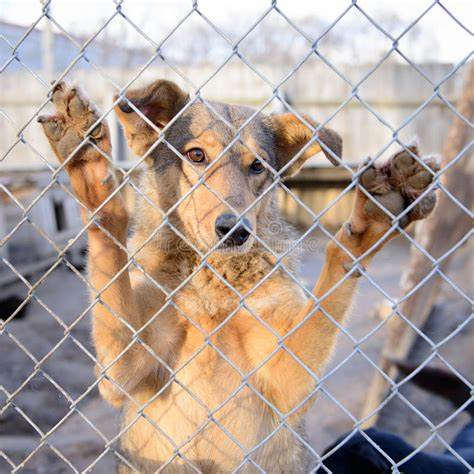
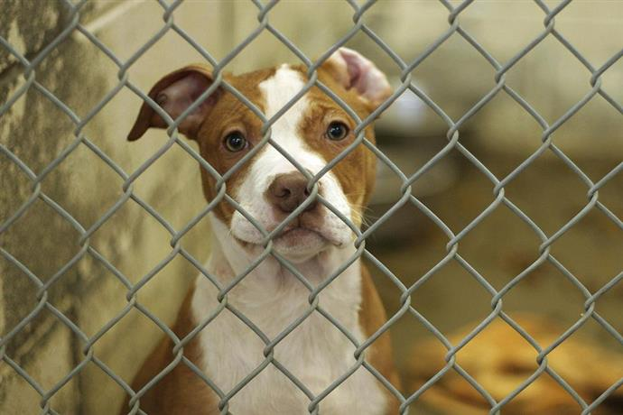
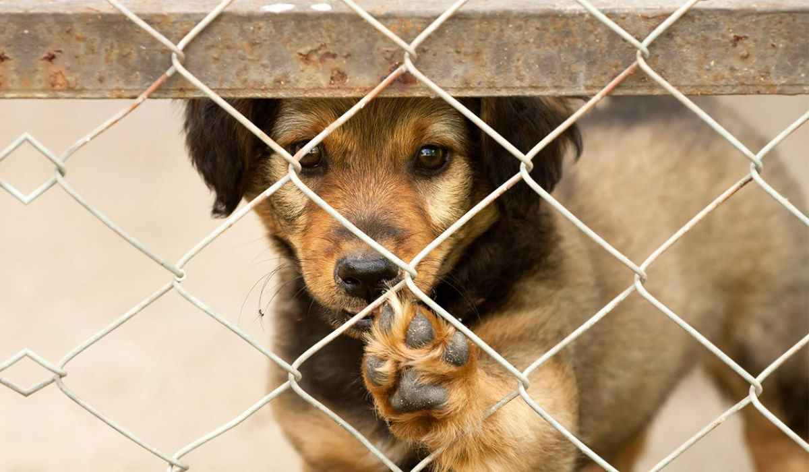

Por que adoptar?
La adopción de animales es una forma de dar un hogar amoroso y permanente a una mascota necesitada. Hay muchas razones por las cuales adoptar una mascota puede ser una gran opción para ti y tu familia. Aquí hay algunas razones para considerar la adopción:
- Salvas una vida: Al adoptar una mascota, estás salvando a un animal de la calle o de un refugio que de otra manera podría ser sacrificado. La mayoría de los refugios y organizaciones de rescate están llenos de mascotas esperando ser adoptadas.
- Mascotas de todas las edades: Hay animales de todas las edades disponibles para adopción. Si prefieres un animal joven y enérgico, puedes adoptar un cachorro o un gatito. Si prefieres un animal más tranquilo, puedes adoptar un animal adulto o incluso uno mayor.
- Menos costoso: Adoptar una mascota puede ser menos costoso que comprar una en una tienda de mascotas o un criadero. Muchas organizaciones de rescate y refugios tienen tasas de adopción razonables que incluyen la esterilización o castración, las vacunas y los exámenes veterinarios iniciales.
- Mascotas entrenadas: Muchas mascotas que están disponibles para adopción ya están entrenadas en comportamientos básicos como sentarse, caminar con correa o usar una caja de arena. Esto puede ser una gran ventaja si no tienes tiempo para entrenar a un cachorro o gatito desde cero.
- Promueve la lucha contra la sobre-población: Al adoptar una mascota, estás contribuyendo a la lucha contra la sobre-población de animales. Al reducir la cantidad de animales que necesitan hogares, se reduce la cantidad de animales que terminan en la calle o en refugios.
En resumen, la adopción de animales es una forma maravillosa de dar a un animal necesitado un hogar amoroso y permanente. Además, la adopción puede ser una opción más asequible y puede ayudar a reducir la sobre-población de animales.
Hacelo por ellos


